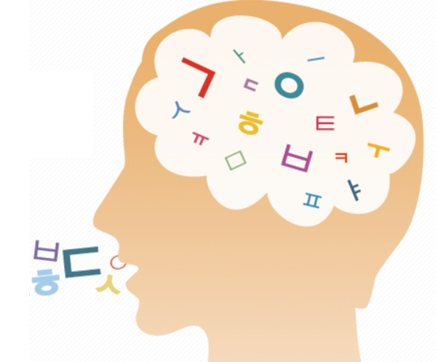

장소와 때를 가리지 않고 나타나는 아이의 중얼거림 때문에 부모의 체면을 망치게 되는 경우가 종종 있다. 중얼거림의 원인에 대해서는 구체적으로 알려진 것은 없지만 내재되어 있는 정서적 표현 욕구가 현실적으로 통제되지 않은데서 나타나는 것으로 보고 있다. 현실 인식이란 내재되어 있는 정서적 표현 욕구를 어느 정도 통제하고 조절하는 역할을 하도록 한다. 그렇지만 현실 인식이 부족한 자폐아이에게는 정서 욕구를 통제하거나 조절하는 인식 능력이 떨어진다. 이렇게 볼 때 아이의 중얼거림은 인지의 미분화에서 오는 것이라고 할 수 있다.
1. 자신이 어떤 특별한 의도와 뜻을 표현하고자 할 때
아이는 자신이 획득된 언어와 언어적 기술이 상대적으로 떨어질 때 그리고 습득한 어휘가 한정적일 때 똑같은 말들을 반복하게 된다. 그리고 지금까지 의식적이든 무의식적이든 환경에서 획득하게 된 여러 가지 말들을 나열하거나 언어를 대치하는 현상이다.
2. 현재와 과거 경험적 사실의 혼란스러운 정서와 기분을 나타낼 때
아이는 자신의 기분과 정서를 언어적으로 표현하고자 하는 것이다. 아이는 대체로 통제되거나 조절되지 않는 경우 현재와 과거의 경험을 구분하지 못하여 과거의 경험이 현실 속에 이루어지는 것처럼 지각하게 된다. 정서적으로 매우 불안한 상태의 경우 혼자 중얼거리면서 웃거나 웃으면서 알 수 없는 말을 중얼거린다.
3. 정보를 처리하는 과정의 심리적 혼란 상태
선택적 주의 결손으로 인해 외부의 정보들이 동시다발적으로 투입되는 현상을 의미한다. 즉 현재 환경으로부터 오는 다양한 정보에 대해 반응하는 과정에서 중얼거림으로 나타난다. 아이가 특정한 소리와 다양한 시각적 정보를 통제되지 않고 동시에 유입이 된다면 지각적으로 많은 혼란이 발생하게 된다. 이때 아이의 중얼거림은 자신의 선택적 주의 결손에 의해 일어나는 심리적 혼란한 상태를 표현하는 정서적 반응이다.
4. 일반 정상 아이들에게도 흥얼거림이 나타나는 것과 차이가 있음
자폐아이의 중얼거림은 정상 아이들이 나타내는 흥얼거림과 소리에서 큰 차이가 없다. 특별히 기분이 좋거나 쾌감을 얻었을 때 혼자 무언가를 가지고 놀면서 또는 어떤 행동을 하면서 콧소리로 흥얼대거나 혼자 중얼거린다. 일반 아이의 흥얼거림과 자폐아동의 중얼거림에는 큰 차이가 없다. 자폐아이의 경우는 현실 상황에서 적절히 조절하지 못하는 소리이지만 정상 아이의 경우 상황과 분위기에 따라서 혹은 자신이 처한 입장에서 정서적 반응이 적절히 통제되고 조절한다는 점이다.
5. 중얼거림은 언어 획득과 동시에 소거 됨
중얼거림은 말을 하기 시작할 때부터 조금씩 소거된다. 무의미하게 중얼거리는 언어 태도가 정상적인 언어 획득에 의해 자연히 소거되는 것은 아이이 중얼거림을 언어로 대치하는 원리이다. 중얼거림이 자신의 특별한 정서나 의도를 표현하는 것이라면 언어 또한 자신의 뜻을 전달하는 매체라는 점에서 공통적이다. 중얼거림 자체가 언어로 대치된다는 것이며 결국 중얼거림이 언어 표현의 일부라는 것이다. 아이가 자신의 뜻이 관철되지 않거나 특별한 부분에서 불쾌감을 경험할 때 중얼거림이 심해지는 반응은 언어적 표현 수단이므로 언어 발달이 향상되면 중얼거림은 점차 소거 될 것이다.
이와 같이 아이들은 타인과 상호작용 하는데 있어서 쉽고 편안하고 자연스럽게 해내는데 어려움이 있지만 성장하면서 자연스럽게 언어획득하게 된다. 반면, 선천적인 신경학적 오류가 있는 경우는 인지적, 정서적, 사회적 과거 경험과 현실 상황을 조율하기 어려워 중얼거림 등 이상반응으로 나타낸다. 자식이 아프면 부모는 그의 천배 만배는 힘들고 더 아파한다. 그러면서 부모는 그저 바라는 것이 자식의 행복이라고 외친다.